The classic tale of three bears, three bowls of porridge — and one very curious little girl!
⏱️ 6-7 min read•🎨 12 Story Illustrations•🎙️ Voice Narration•🗣️ Say-Along Chants
🎙️
Listen to Full Story Narration
Classic read-aloud voice narration with music and expressive sound
0:006:58
Scene 1 • The Three Bears' House in the Wood
Once upon a time there were three Bears, who lived together in a house of their own, in a wood. One of them was a Little Wee Bear, and one was a Middle-sized Bear, and the other was a Great Big Bear.
They had each a bowl for their porridge; a little bowl for the Little Wee Bear; and a middle-sized bowl for the Middle-sized Bear; and a great bowl for the Great Big Bear. And they had each a chair to sit in; a little chair for the Little Wee Bear; and a middle-sized chair for the Middle-sized Bear; and a great chair for the Great Big Bear. And they had each a bed to sleep in; a little bed for the Little Wee Bear; and a middle-sized bed for the Middle-sized Bear; and a great bed for the Great Big Bear.
One day, after they had made the porridge for their breakfast, and poured it into their porridge-bowls, they walked out into the wood while the porridge was cooling, that they might not burn their mouths by beginning too soon, for they were polite, well-brought-up Bears.
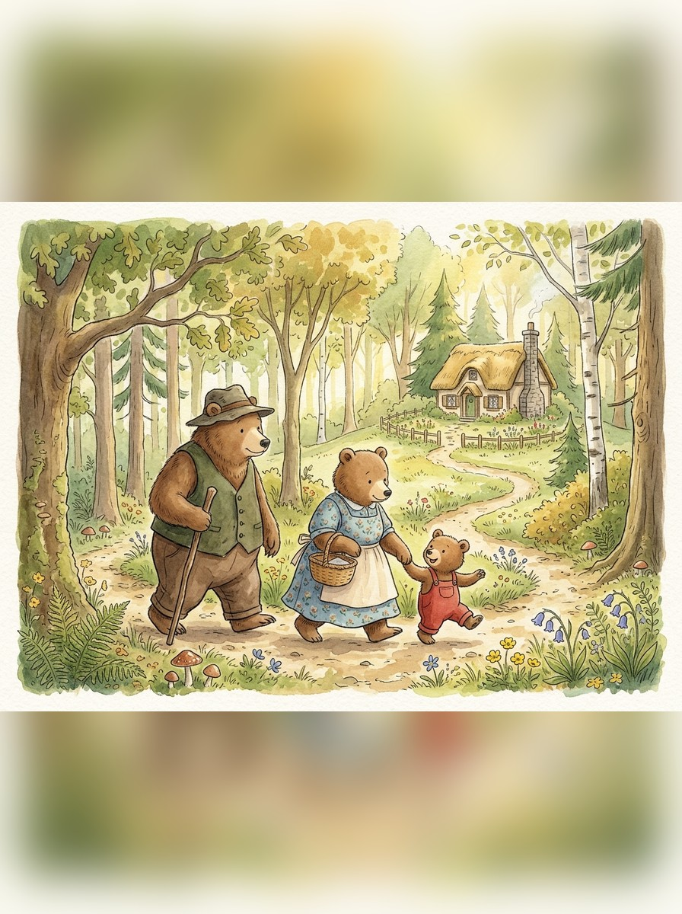
🔍 Zoom
The Three Bears walk out into the wood while their porridge cools.
Scene 2 • Goldilocks Peeps In
And while they were away a little girl called Goldilocks, who lived at the other side of the wood and had been sent on an errand by her mother, passed by the house, and looked in at the window. And then she peeped in at the keyhole, for she was not at all a well-brought-up little girl.
Then seeing nobody in the house she lifted the latch. The door was not fastened, because the Bears were good Bears, who did nobody any harm, and never suspected that anybody would harm them. So Goldilocks opened the door and went in; and well pleased was she when she saw the porridge on the table.
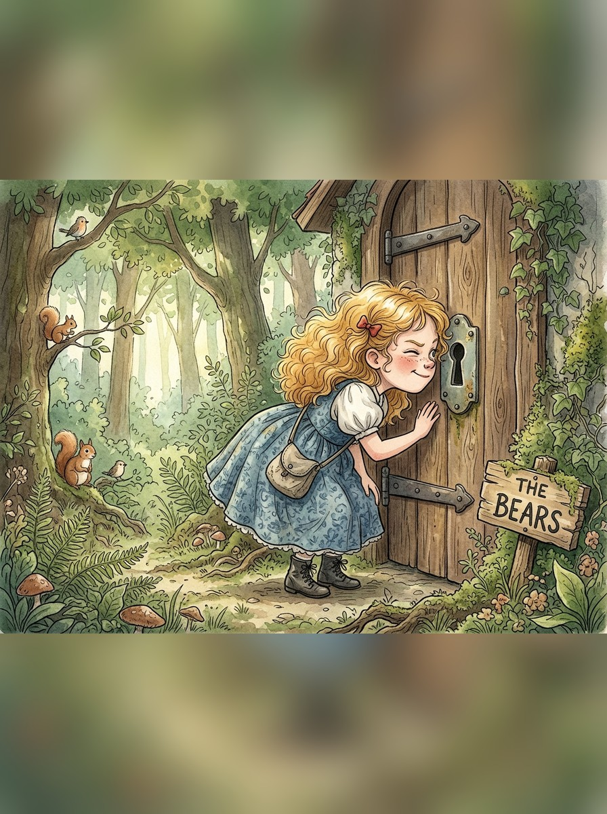
🔍 Zoom
Goldilocks peeps in at the keyhole — and finding nobody home, she lifts the latch.
Scene 3 • Too Hot, Too Cold, Just Right
If she had been a well-brought-up little girl she would have waited till the Bears came home, and then, perhaps, they would have asked her to breakfast; for they were good Bears — a little rough or so, as the manner of Bears is, but for all that very good-natured and hospitable. But she was an impudent, rude little girl, and so she set about helping herself.
🥣 Goldilocks tastes the Great Big Bear's porridge
"Too hot!"
🥣 Goldilocks tastes the Middle-sized Bear's porridge
"Too cold!"
🥣 Goldilocks tastes the Little Wee Bear's porridge
"Just right — and she ate it all up, every bit!"
First she tasted the porridge of the Great Big Bear, and that was too hot for her. Next she tasted the porridge of the Middle-sized Bear, but that was too cold for her. And then she went to the porridge of the Little Wee Bear, and tasted it, and that was neither too hot nor too cold, but just right, and she liked it so well that she ate it all up, every bit!
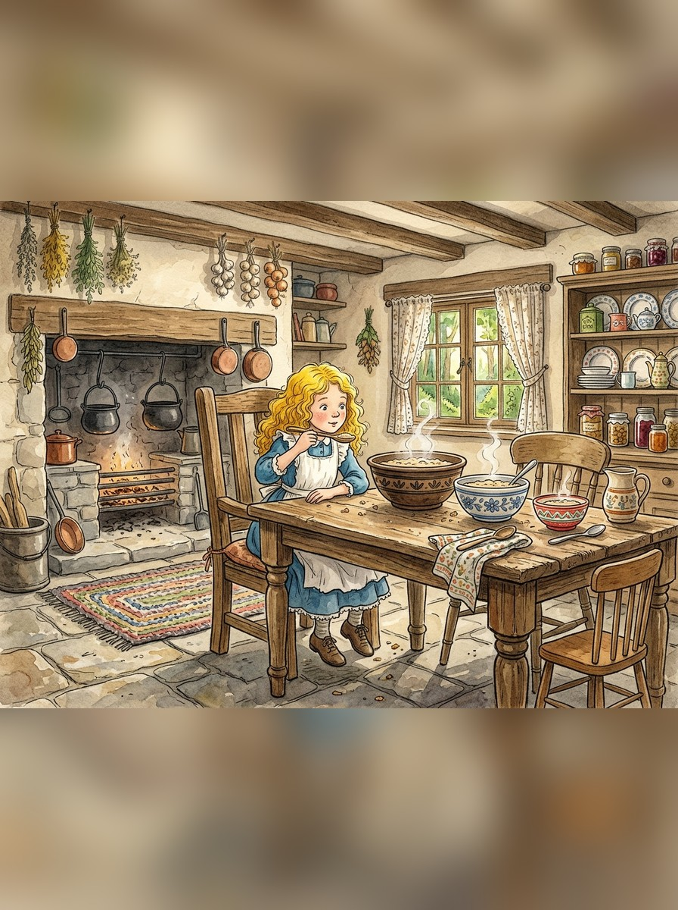
🔍 Zoom
She tasted the Little Wee Bear's porridge — just right! — and ate it all up.
Scene 4 • The Three Chairs
Then Goldilocks, who was tired, for she had been catching butterflies instead of running on her errand, sat down in the chair of the Great Big Bear, but that was too hard for her. And then she sat down in the chair of the Middle-sized Bear, and that was too soft for her.
🪑 Goldilocks tries the Great Big Bear's chair
"Too hard!"
🪑 Goldilocks tries the Middle-sized Bear's chair
"Too soft!"
🪑 Goldilocks tries the Little Wee Bear's chair
"Just right!"
But when she sat down in the chair of the Little Wee Bear, that was neither too hard nor too soft, but just right. So she seated herself in it, and there she sat till the bottom of the chair came out, and down she came, plump upon the ground; and that made her very cross, for she was a bad-tempered little girl.
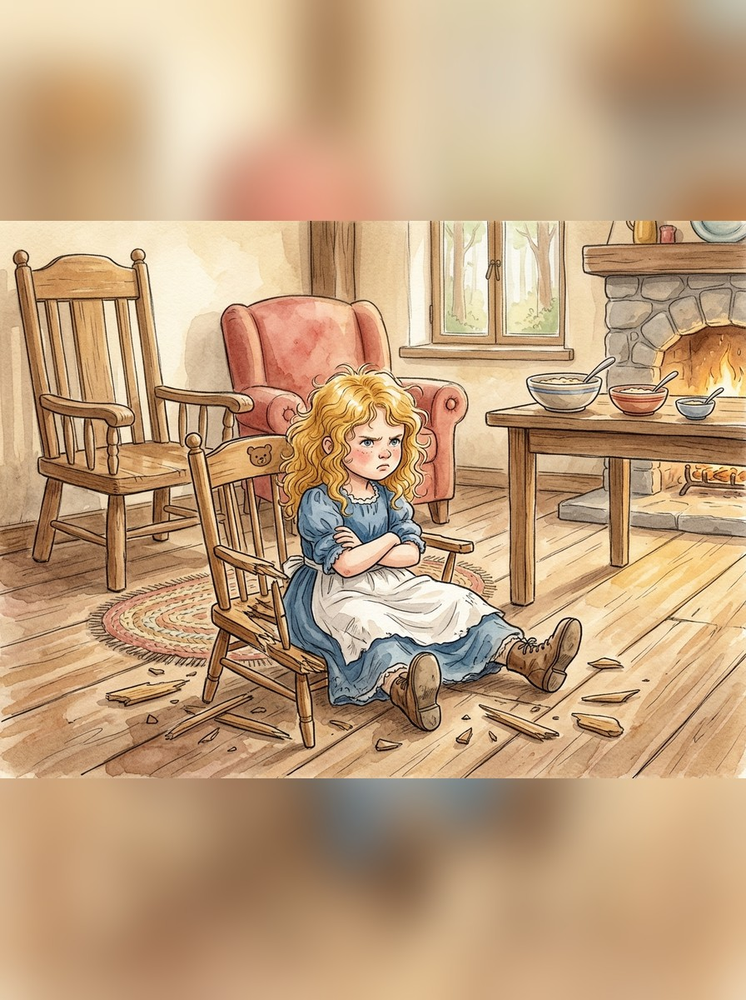
🔍 Zoom
The bottom of the Little Wee Bear's chair came out — and down she came, plump upon the ground!
Scene 5 • The Three Beds
Now, being determined to rest, Goldilocks went upstairs into the bedchamber in which the Three Bears slept.
🛏️ Goldilocks tries the Great Big Bear's bed
"Too high at the head!"
🛏️ Goldilocks tries the Middle-sized Bear's bed
"Too high at the foot!"
🛏️ Goldilocks tries the Little Wee Bear's bed
"Just right — and she fell fast asleep."
And first she lay down upon the bed of the Great Big Bear, but that was too high at the head for her. And next she lay down upon the bed of the Middle-sized Bear, and that was too high at the foot for her. And then she lay down upon the bed of the Little Wee Bear, and that was neither too high at the head nor at the foot, but just right. So she covered herself up comfortably, and lay there till she fell fast asleep.
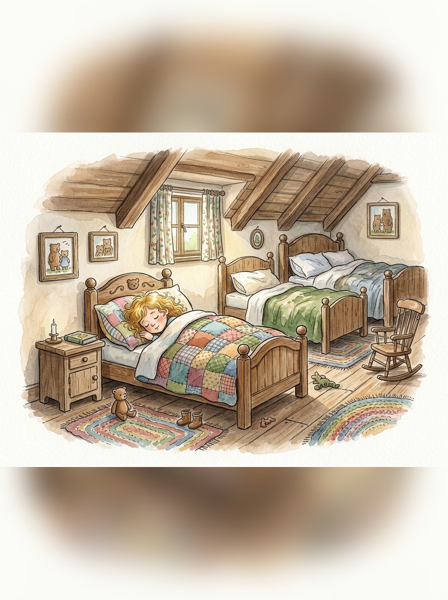
🔍 Zoom
She covered herself up comfortably in the Little Wee Bear's bed, and fell fast asleep.
Scene 6 • "Somebody Has Been at My Porridge!"
By this time the Three Bears thought their porridge would be cool enough for them to eat it properly; so they came home to breakfast. Now careless Goldilocks had left the spoon of the Great Big Bear standing in his porridge.
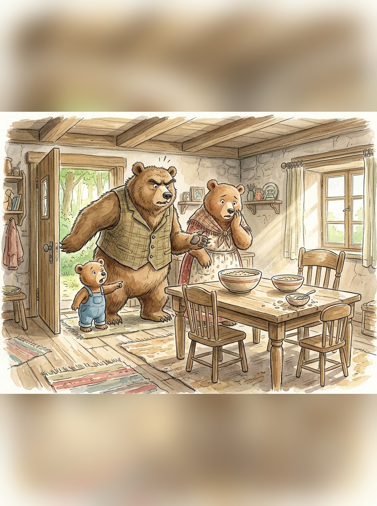
🔍 Zoom
The Three Bears came home to breakfast — and saw the spoons standing in the porridge.
🐻 The Great Big Bear, in his great, rough, gruff voice
"SOMEBODY HAS BEEN AT MY PORRIDGE!"
🐻 The Middle-sized Bear, in his middle-sized voice
"SOMEBODY HAS BEEN AT MY PORRIDGE!"
🐻 The Little Wee Bear, in his little wee voice
"SOMEBODY HAS BEEN AT MY PORRIDGE, AND HAS EATEN IT ALL UP!"
Then the Middle-sized Bear looked at his porridge and saw the spoon was standing in it too. Then the Little Wee Bear looked at his, and there was the spoon in the porridge-bowl, but the porridge was all gone!
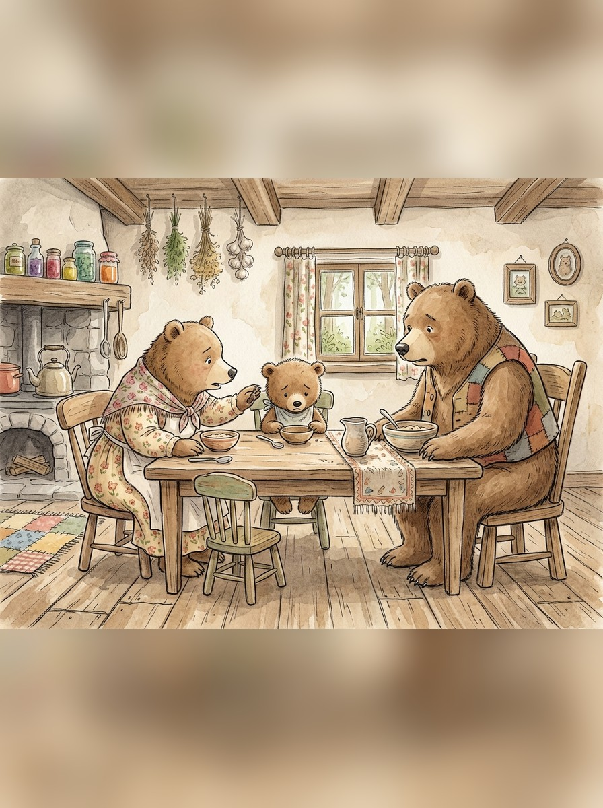
🔍 Zoom
The Little Wee Bear's porridge was all gone — every bit!
Scene 7 • "Somebody Has Been Sitting in My Chair!"
Upon this the Three Bears, seeing that some one had entered their house, and eaten up the Little Wee Bear's breakfast, began to look about them. Now the careless Goldilocks had not put the hard cushion straight when she rose from the chair of the Great Big Bear.
🐻 The Great Big Bear, in his great, rough, gruff voice
"SOMEBODY HAS BEEN SITTING IN MY CHAIR!"
🐻 The Middle-sized Bear, in his middle-sized voice
"SOMEBODY HAS BEEN SITTING IN MY CHAIR!"
🐻 The Little Wee Bear, in his little wee voice
"SOMEBODY HAS BEEN SITTING IN MY CHAIR, AND HAS SAT THE BOTTOM THROUGH!"
And the careless Goldilocks had squatted down the soft cushion of the Middle-sized Bear.
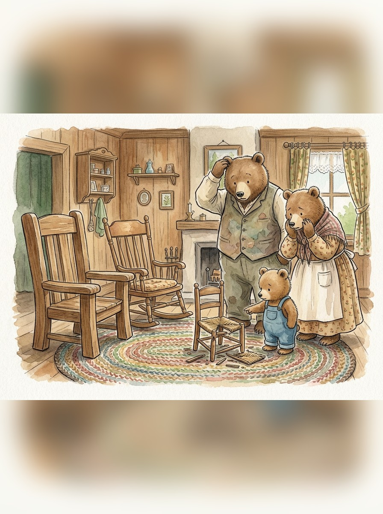
🔍 Zoom
"Somebody has been sitting in my chair — and has sat the bottom through!"
Scene 8 • "Somebody Has Been Lying in My Bed!"
Then the Three Bears thought they had better make further search in case it was a burglar, so they went upstairs into their bedchamber.
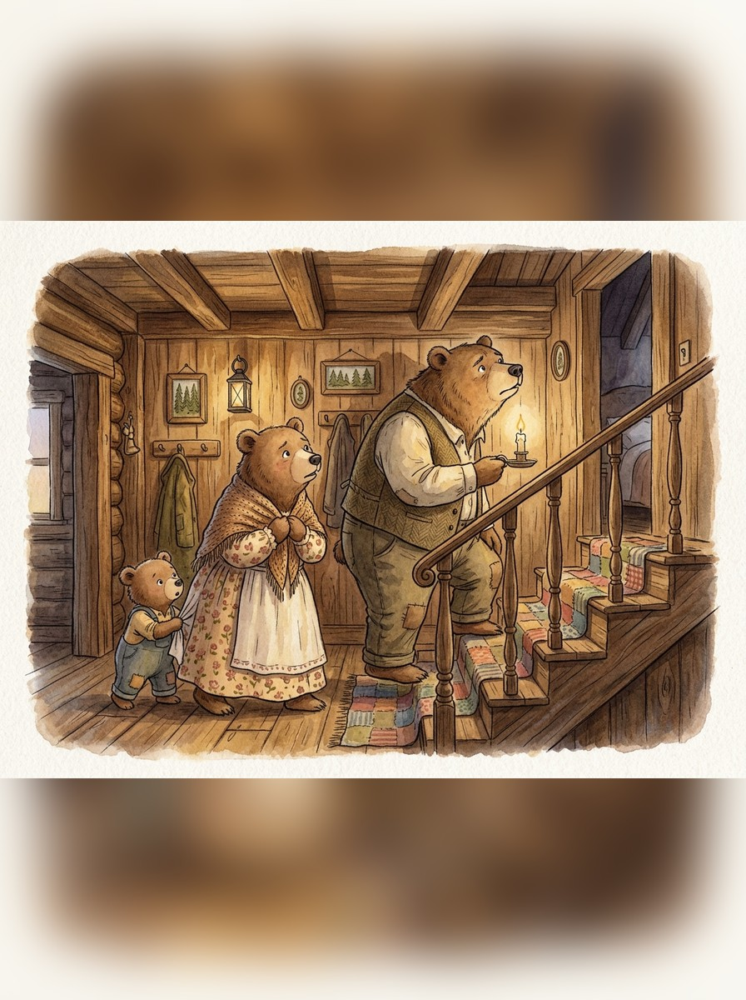
🔍 Zoom
Upstairs they went, the Great Big Bear carrying a candle, to search the bedchamber.
Now Goldilocks had pulled the pillow of the Great Big Bear out of its place.
🐻 The Great Big Bear, in his great, rough, gruff voice
"SOMEBODY HAS BEEN LYING IN MY BED!"
And Goldilocks had pulled the bolster of the Middle-sized Bear out of its place.
🐻 The Middle-sized Bear, in his middle-sized voice
"SOMEBODY HAS BEEN LYING IN MY BED!"
But when the Little Wee Bear came to look at his bed, there was the bolster in its place! And the pillow was in its place upon the bolster! And upon the pillow — ? There was Goldilocks's yellow head — which was not in its place, for she had no business there.
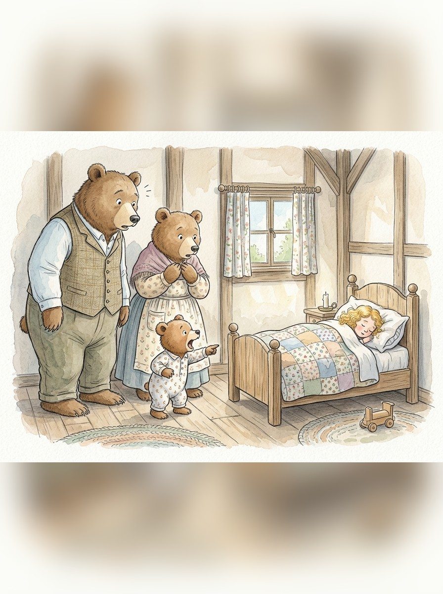
🔍 Zoom
And upon the pillow — there was Goldilocks's yellow head!
🐻 The Little Wee Bear, in his little wee voice
"SOMEBODY HAS BEEN LYING IN MY BED — AND HERE SHE IS STILL!"
Scene 9 • And Away She Ran
Now Goldilocks had heard in her sleep the great, rough, gruff voice of the Great Big Bear; but she was so fast asleep that it was no more to her than the roaring of wind, or the rumbling of thunder. And she had heard the middle-sized voice of the Middle-sized Bear, but it was only as if she had heard some one speaking in a dream. But when she heard the little wee voice of the Little Wee Bear, it was so sharp, and so shrill, that it awakened her at once.
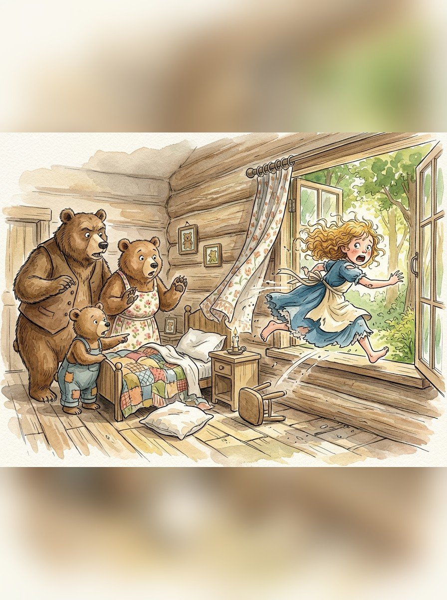
🔍 Zoom
Up she started — and jumped out of the open window!
Up she started, and when she saw the Three Bears on one side of the bed, she tumbled herself out at the other, and ran to the window. Now the window was open, because the Bears, like good, tidy Bears, as they were, always opened their bedchamber window when they got up in the morning. So naughty, frightened little Goldilocks jumped; and whether she broke her neck in the fall, or ran into the wood and was lost there, or found her way out of the wood and got whipped for being a bad girl and playing truant, no one can say. But the Three Bears never saw anything more of her.
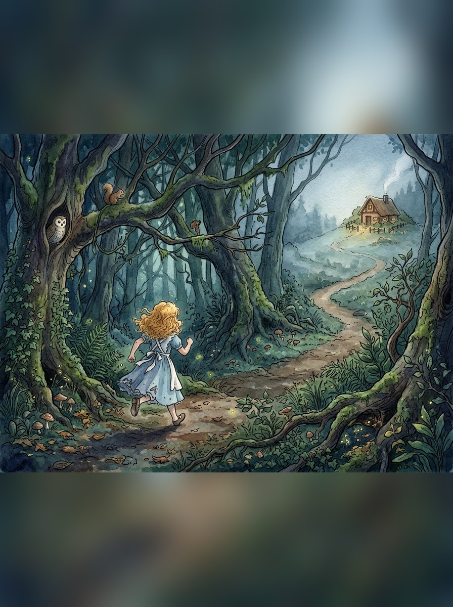
🔍 Zoom
And away she ran into the wood — and the Three Bears never saw anything more of her.